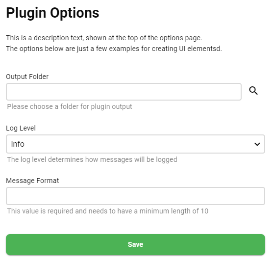

Creating UI for Plugins
Note
This section is describing the new and easy way for creating plugin user interfaces. The classic way using bundled html and javascript files is still supported but not covered in this documentation section
Introduction
History
Creating user interfaces for Emby Server plugins has been quite a complex and tedious task. It was required to create API endpoints for exchanging data with the plugin, create custom HTML files containing all the required controls and make sure to do it all in the same way as Emby does it, use the same HTML elements and CSS classes, none of which were ever documented and which are subject to frequent changes.
It was required to create Javascript files which load the data from the plugin API's endpoints, deserialize the data and then go through each of the html elements and set them to the received values. Saving data required to write almost the same code again, just in reverse, to collect the values from the html elements, serialize and send it back to the plugin's API endpoint for saving.
Plugins got broken quite too often, either visually or sometimes even functionallly due to breaking changes in Emby Server.
Typical Approach
To implement a configuration UI for a plugin, you typically start by creating a class containing the option properties which can then be serialized for saving or loading a plugin settings file from or to disk. Such class could look like this for example:
public class PluginConfig
{
public string TargetFolder { get; set; }
public LogSeverity LogLevel { get; set; }
public string MessageFormat { get; set; }
}
Motivation
Emby's mission is to be user-friendly and easy to use. Requiring users to manually edit text files from disk to make any changes to configuration does not align with that and is highly disregarded.
Though, when looking at that class above, a developer might come to think:
"Why do I - and every other plugin developer - need to do all that crazy amount of work, just for creating a simple configuration UI with a few settings? Actually, that class already defines almost everything I need and it should be none of my business to create HTML setttings pages that mimick the look and the behavior of Emby Server's own UI..."
That was the original thought when we had started with the design of the new Plugin UI approach a few years ago.
Not a UI Framework
As a developer, you have probably seen many UI frameworks already, and HTML+JS is just one of such frameworks - liked by many and hated by many as well. But the same could be said about other frameworks and hence it was clear that replacing one UI framework with another doesn't get us anywhere.
Essentially, developers should only need to define the content which should be shown in the UI and the functionality that is involved/exposed, without needing to care about the way it is supposed to look like.
We want to make developing for Emby as easy as possible and in a way that developers don't need to care much about the UI presentation and coding. The concept about separation of content and presentation is nothing new at all. Many UI frameworks have made such promises, but these were rarely ever fulfilled and in most cases, developers end up working on both - content and design - at the same time.
The Emby Plugin UI is different in this regard: it is impossible for a developer to affect the UI presentation in a way other than the intended/predefined ones. Technically, it doesn't fit in any of the known patterns. Speaking in terms like MVC (Model, View, Controller) or MVVM (Model, View, ViewModel), it is some kind of VMC (ViewModel, Controller) or MC (Model, Controller), because you can either use a model class directly or create an individual ViewModel class. Note that there is no 'View'. The View is autogenerated by Emby Server based on the structure of the ViewModel/Model class (or class hierarchy if nested). That structure is all you can influence as a plugin developer, but there's no way to set positions, sizes, colors, fonts, flow, wrapping and all those kinds of things.
That's why this is not a UI framework.
Declarative UI
So how does it work?
If you have ever worked with property grids in UI applications (similar to the Properties tool window in Visual Studio), then you'll understand instantly, because the rows in those property grids are auto-generated in the same way: By checking and evaluating property descriptors on a given class:
- A string property is shown as a text field
- A boolean property is shown as a checkbox
- An enum property is shown as a drowdown
- etc.
Not all information can be expressed by the basic source code of the class alone. In those cases we can use member attributes to supply that kind of information right at those places where it belongs to.
ViewModel Example
Let's look at the class from above again, but this time with those attributes included.
Class
public class PluginConfig
{
public override string EditorTitle => "Plugin Options";
public override string EditorDescription => "This is a description text, shown at the top of the options page.\\n"
+ "The options below are examples for creating UI elements.";
[DisplayName("Output Folder")]
[Description("Please choose a folder for plugin output")]
[EditFolderPicker]
public string TargetFolder { get; set; }
[Description("The log level determines how messages will be logged")]
public LogSeverity LogLevel { get; set; }
[Description("This value is required and needs to have a minimum length of 10")]
[Required]
public string MessageFormat { get; set; }
}
Resulting UI
At the time of writing, using the 'Light' theme this generates the following UI view:

Getting Started
The easiest way to get into this is to create a plugin using the 'SimpleUI' approach and template:
Advanced Features
The new Plugin UI offers many more features like multiple UI pages, tabbed UI pages, data grid display, live UI updating, auto-postback and more.
Note
Documentation for those features will be added in future SDK updates